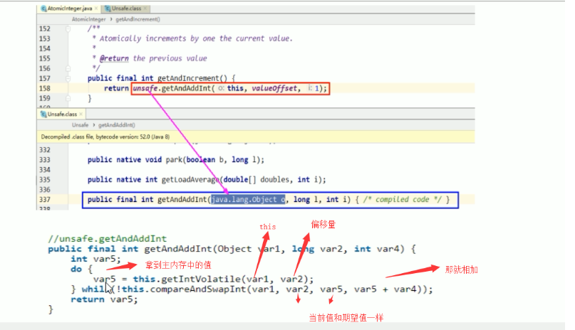

Java锁之自旋锁
自旋锁：spinlock，是指尝试获取锁的线程不会立即阻塞，而是采用循环的方式去尝试获取锁，这样的好处是减少线程上下文切换的消耗，缺点是循环会消耗CPU
原来提到的比较并交换，底层使用的就是自旋，自旋就是多次尝试，多次访问，不会阻塞的状态就是自旋。

优缺点
优点：循环比较获取直到成功为止，没有类似于wait的阻塞
缺点：当不断自旋的线程越来越多的时候，会因为执行while循环不断的消耗CPU资源
手写自旋锁
通过CAS操作完成自旋锁，A线程先进来调用myLock方法自己持有锁5秒，B随后进来发现当前有线程持有锁，不是null，所以只能通过自旋等待，直到A释放锁后B随后抢到
1
2
3
4
5
6
7
8
9
10
11
12
13
14
15
16
17
18
19
20
21
22
23
24
25
26
27
28
29
30
31
32
33
34
35
36
37
38
39
40
41
42
43
44
45
46
47
48
49
50
51
52
53
54
55
56
57
58
59
60
61
62
63
64
65
66
67
68
69
70
71
72
73
74
75
76
77
78
79
80
| /**
* 手写一个自旋锁
*
* 循环比较获取直到成功为止，没有类似于wait的阻塞
*
* 通过CAS操作完成自旋锁，A线程先进来调用myLock方法自己持有锁5秒，B随后进来发现当前有线程持有锁，不是null，所以只能通过自旋等待，直到A释放锁后B随后抢到
* @author: ylyang
*/
public class SpinLockDemo {
// 现在的泛型装的是Thread，原子引用线程
AtomicReference<Thread> atomicReference = new AtomicReference<>();
public void myLock() {
// 获取当前进来的线程
Thread thread = Thread.currentThread();
System.out.println(Thread.currentThread().getName() + "\t come in ");
// 开始自旋，期望值是null，更新值是当前线程，如果是null，则更新为当前线程，否者自旋
while(!atomicReference.compareAndSet(null, thread)) {
}
}
/**
* 解锁
*/
public void myUnLock() {
// 获取当前进来的线程
Thread thread = Thread.currentThread();
// 自己用完了后，把atomicReference变成null
atomicReference.compareAndSet(thread, null);
System.out.println(Thread.currentThread().getName() + "\t invoked myUnlock()");
}
public static void main(String[] args) {
SpinLockDemo spinLockDemo = new SpinLockDemo();
// 启动t1线程，开始操作
new Thread(() -> {
// 开始占有锁
spinLockDemo.myLock();
try {
TimeUnit.SECONDS.sleep(5);
} catch (InterruptedException e) {
e.printStackTrace();
}
// 开始释放锁
spinLockDemo.myUnLock();
}, "t1").start();
// 让main线程暂停1秒，使得t1线程，先执行
try {
TimeUnit.SECONDS.sleep(5);
} catch (InterruptedException e) {
e.printStackTrace();
}
// 1秒后，启动t2线程，开始占用这个锁
new Thread(() -> {
// 开始占有锁
spinLockDemo.myLock();
// 开始释放锁
spinLockDemo.myUnLock();
}, "t2").start();
}
}
|
最后输出结果
1
2
3
4
5
| t1 come in
.....五秒后.....
t1 invoked myUnlock()
t2 come in
t2 invoked myUnlock()
|
首先输出的是 t1 come in
然后1秒后，t2线程启动，发现锁被t1占有，所有不断的执行 compareAndSet方法，来进行比较，直到t1释放锁后，也就是5秒后，t2成功获取到锁，然后释放